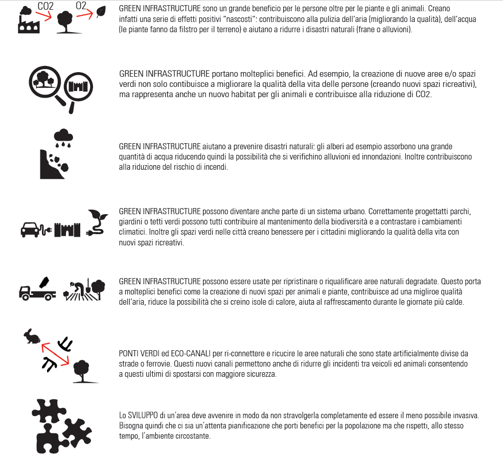

| Green infrustracture - principi |
 |
| Le
infrastrutture verdi sono una rete di aree naturali e seminaturali
pianificata a livello strategico con altri elementi ambientali,
progettata e gestita in maniera da fornire un ampio spettro di servizi
ecosistemici. Ne fanno parte gli spazi verdi (o blu, nel caso si tratti di ecosistemi acquatici) e altri elementi fisici in aree sulla terraferma (incluse le aree costiere) e marine. Il crescente interesse europeo per le infrastrutture verdi è motivato oramai dalla riconosciuta importanza di pianificare e realizzare reti connesse tra le aree naturali ma anche tra quelle semi-naturali (aree agricole) per mantenere, sviluppare e assicurare una serie di servizi ecosistemici. Tali servizi forniti dalla natura possono essere di vari tipi: di approvvigionamento (cibo, acqua) di regolazione (del clima, delle precipitazioni) di supporto (la depurazione dell'aria e delle acque) di benessere (attività ricreative, culturali). La sempre maggiore attività umana sta intaccando la biodiversità, compromettendola. Progettare quindi infrastrutture verdi diventa una priorità sia per fermare il degrado sia per sviluppare e valorizzare i servizi ecosistemici. Le green infrastructure assumono un ruolo strategico per una green economy che punta su un'elevata qualità ecologica e sulla ricostruzione e valorizzazione del capitale umano, indispensabile per un benessere e uno sviluppo economico. |